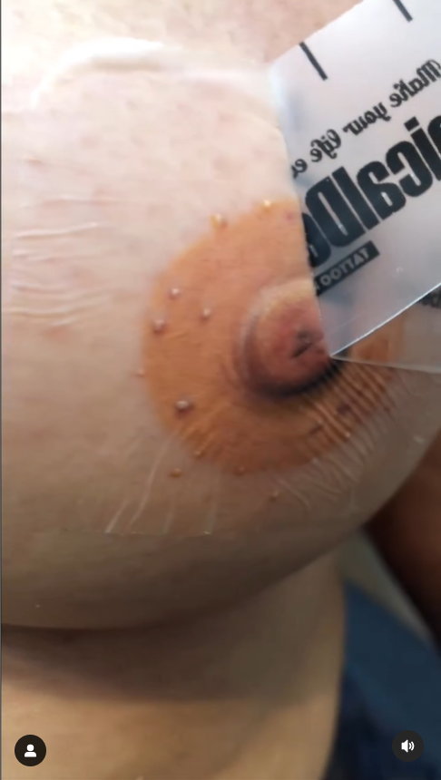

Além de tatuadora e artista plástica, Ivy Gabrielli Rodrigues também dedica o seu tempo à fazer o bem ao próximo. Há muitos anos ela vem trabalhando na reconstrução dos mamilos de mulheres que passaram pela mastectomia, por conta do câncer de mama, devolvendo a autoestima para muitas delas. O trabalho é realizado de forma gratuita, mediante agendamento.
"Para mim isto tudo é muito satisfatório. Me sinto realizada. Quando termino o trabalho, parece que estou ganhando um prêmio. Não ganho em dinheiro, mas o que eu ganho é muito maior que isso, que é essa satisfação de estar fazendo um bem para alguém".
— Ivy Gabrielli